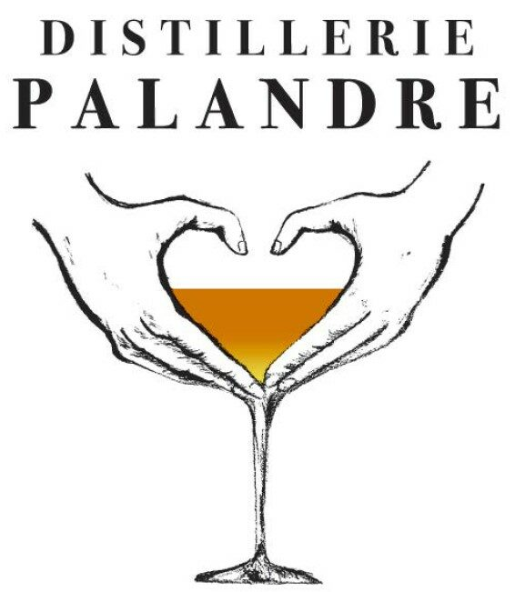
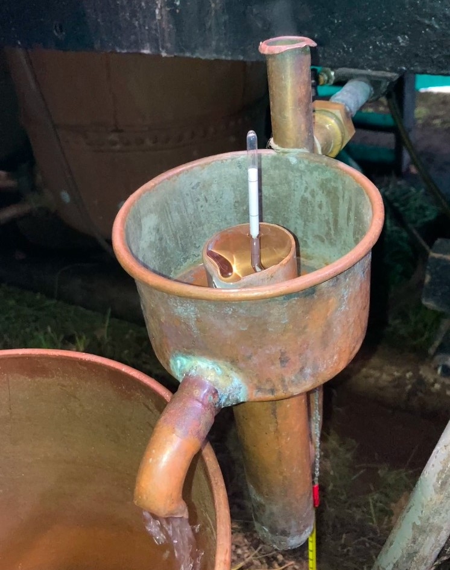
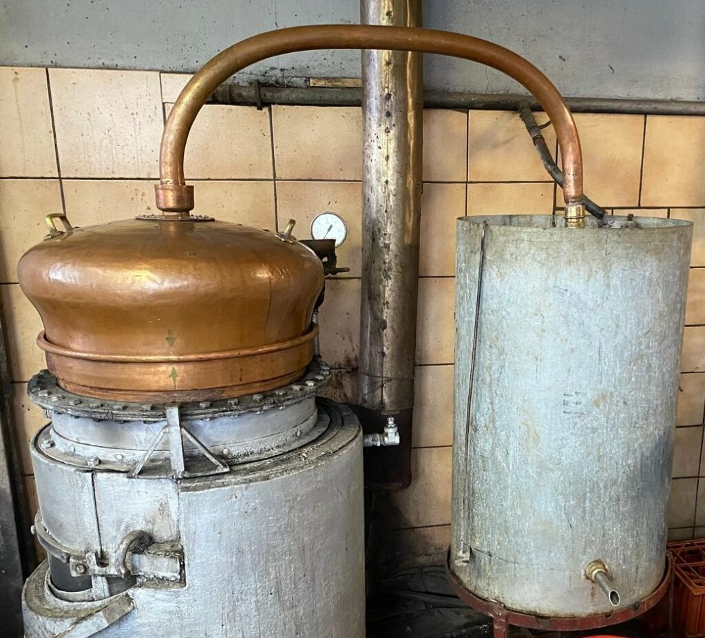
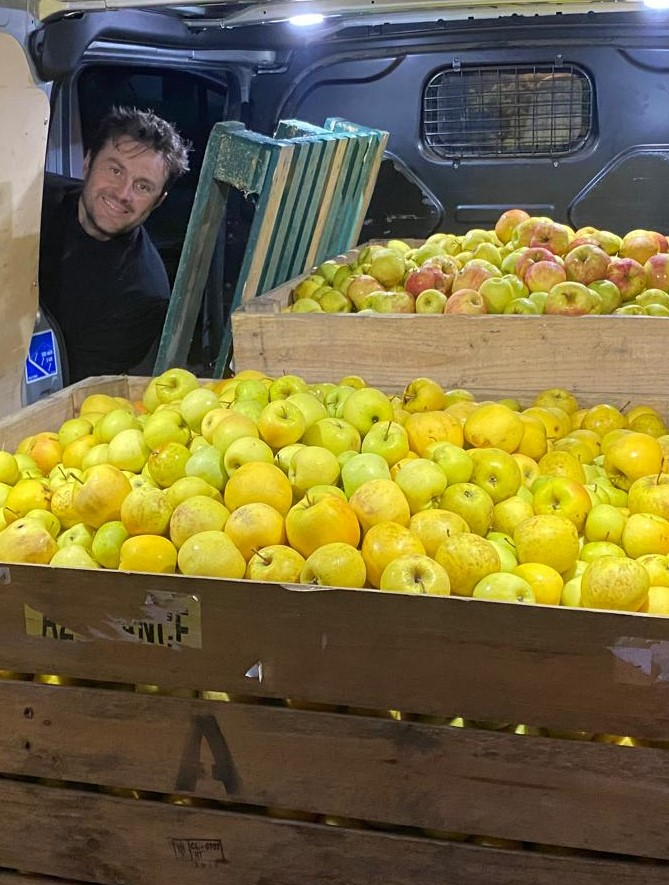
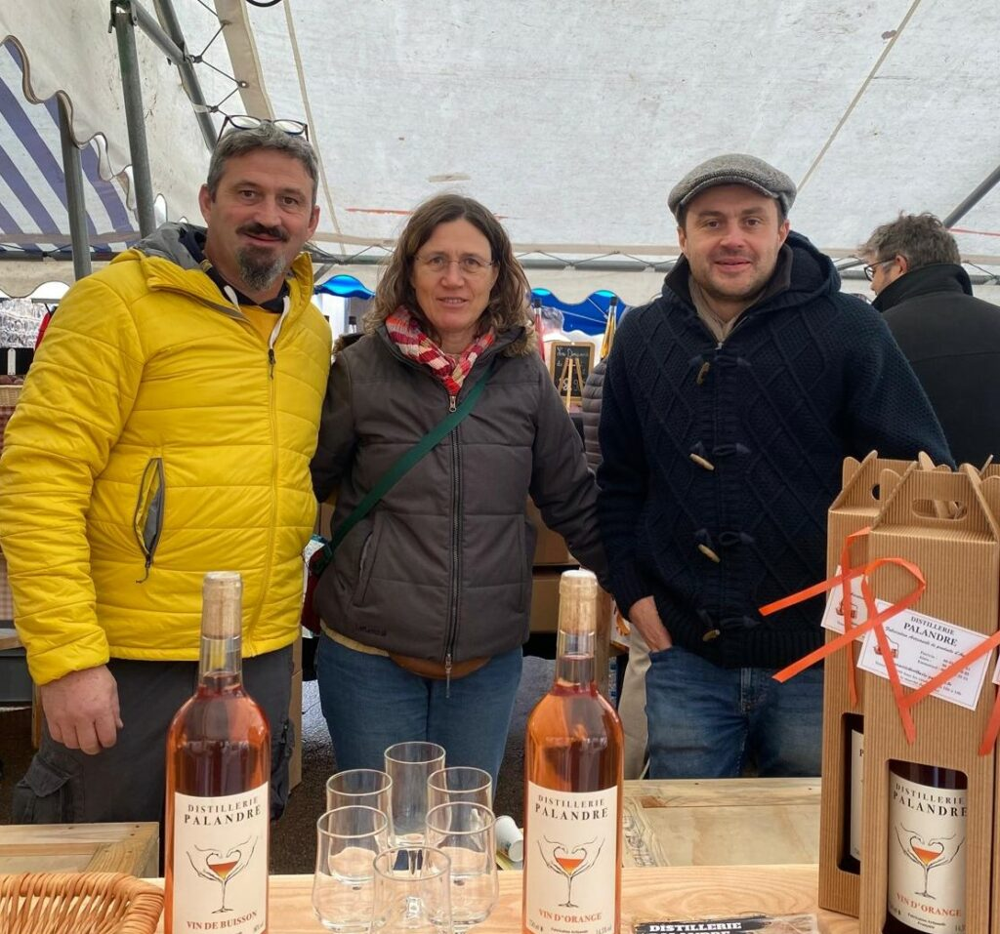

La vente d'alcool est interdite aux mineurs.
L'abus d'alcool est dangereux pour la santé. À consommer avec modération.

Distillerie familiale · Perreux · Loire
Le vin d'orange de notre papa, le vin de buisson des haies du Roannais, les eaux-de-vie de pommes du Pilat. Des boissons familiales qui étaient en train de disparaître avec les derniers bouilleurs de cru — on a décidé de les faire durer.
La recette de notre papa, primée dès sa première présentation.
Poires du Pilat distillées en alambic, macérées aux agrumes.
10 385 échantillons, 54 pays, 1 100 jurés. Et un prunellier de chez nous.
Nos produits
« Flânez de page en page, explorez nos spiritueux et trésors du passé. » Chaque recette est reprise d'un carnet de famille, équilibrée puis produite en petite quantité — quand les fruits sont là.
Où nous rencontrer
Fêtes de village, marchés nocturnes, comices, salons de créateurs : c'est là qu'on ouvre les bouteilles et qu'on fait goûter. Cet agenda se met à jour tout seul — les dates passées basculent dans l'archive, les prochaines remontent en tête.
Quelle bouteille ?
La question qu'on nous pose le plus souvent sur un stand : « laquelle je prends ? ». Voilà la réponse qu'on donnerait de vive voix.
On vous indique la bouteille qui correspond, avec sa contenance et son degré — exactement comme on le ferait sur le stand.
La distillerie
La Distillerie Palandre est née d'un constat : il devient de plus en plus difficile de trouver des bouilleurs de cru, et avec la disparition de certains privilèges, les boissons familiales à base d'eaux-de-vie risquent de disparaître avec eux.
Le projet a démarré à trois — Patricia, Alain et Emmanuel. Mais l'équipe ne s'arrête pas là : des arrière-grands-parents à l'arrière-petit-fils, toute la famille est présente aux moments clés, et les copains aussi. Nous sommes partis de rien et nous développons à notre rythme, en parallèle de nos activités professionnelles.
Nous avons commencé modestement, avec le vin d'orange de notre papa et le vin de buisson, une tradition bien ancrée dans la région et aujourd'hui en voie de disparition. Le stock est parti en un temps record. Notre objectif à moyen terme : restaurer de vieux alambics en cuivre grâce aux bénéfices, pour continuer à faire vivre ces méthodes.



Recettes préservées telles quelles, savoir-faire des aînés mis en avant, et chaque recette équilibrée pour rester fidèle à l'héritage.
Pommes et poires du Pilat, prunellier sauvage, oranges amères : les meilleurs fruits pour une véritable eau-de-vie, comme autrefois.
Distillation en alambic de cuivre — ce qui participe activement à la préservation de ce patrimoine, et qu'on compte bien élargir.
Contact
« N'hésitez pas à nous contacter pour venir déguster ! » — la distillerie n'a pas de boutique ouverte en continu, alors un appel ou un mail avant de passer, c'est plus sûr.
Une commande pour un mariage, un comité d'entreprise, une envie de découvrir l'atelier : écrivez-nous, on répond nous-mêmes.
Écrire à la distillerie Appeler le 06 72 18 39 55SAS Distillerie Palandre — SIRET 949 219 380 00019. L'abus d'alcool est dangereux pour la santé.